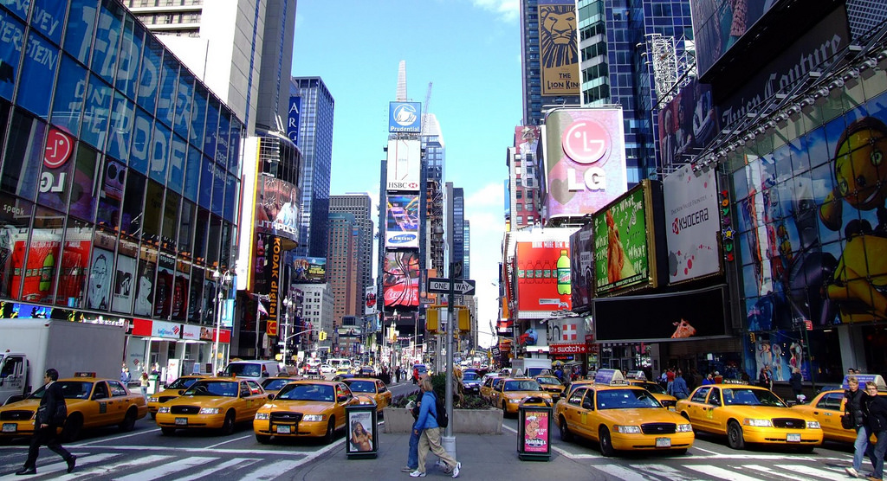

Baia do Sancho is located in Fernando de Noronha, Brazil. The crystal clear water beach has a lot of fun and exciting things to offer. It is a great place to visit if you want to kick back and relax or go for a once in a lifetime adventure.
New York City
New York City, located in New York, is one of the biggest and most visited places in the world. It is full of bright lights and tall buildings. It is also home to the famous Broadway and Statue of Liberty. It is the perfect place to have fun and walk around.